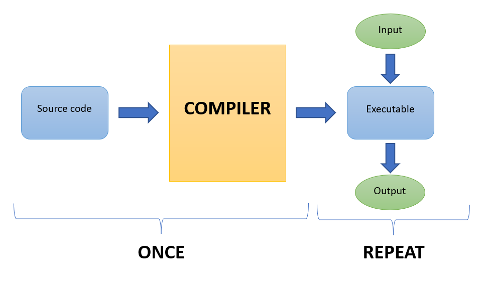
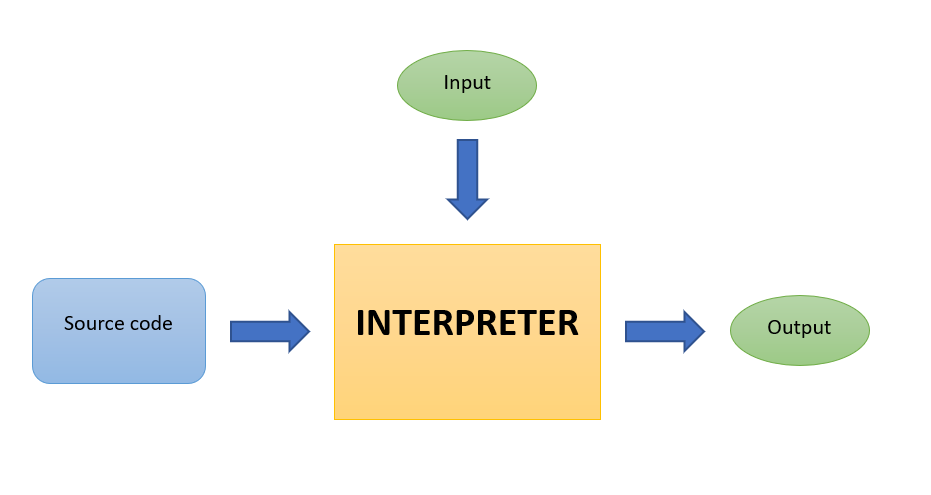
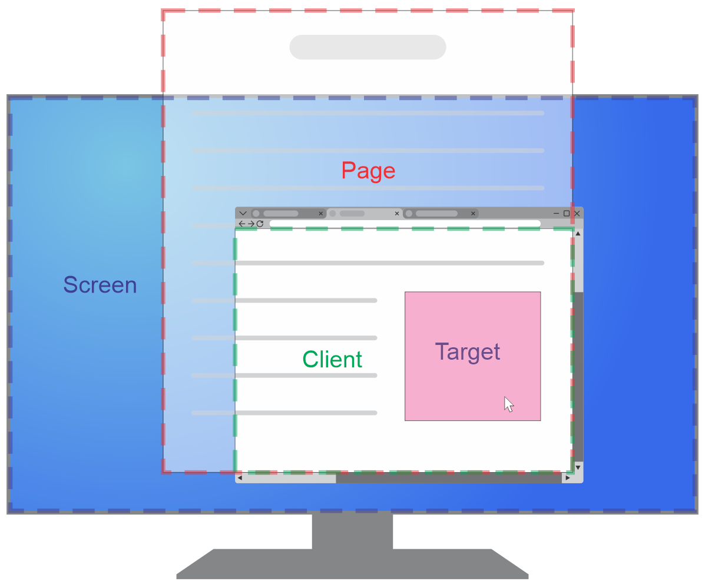
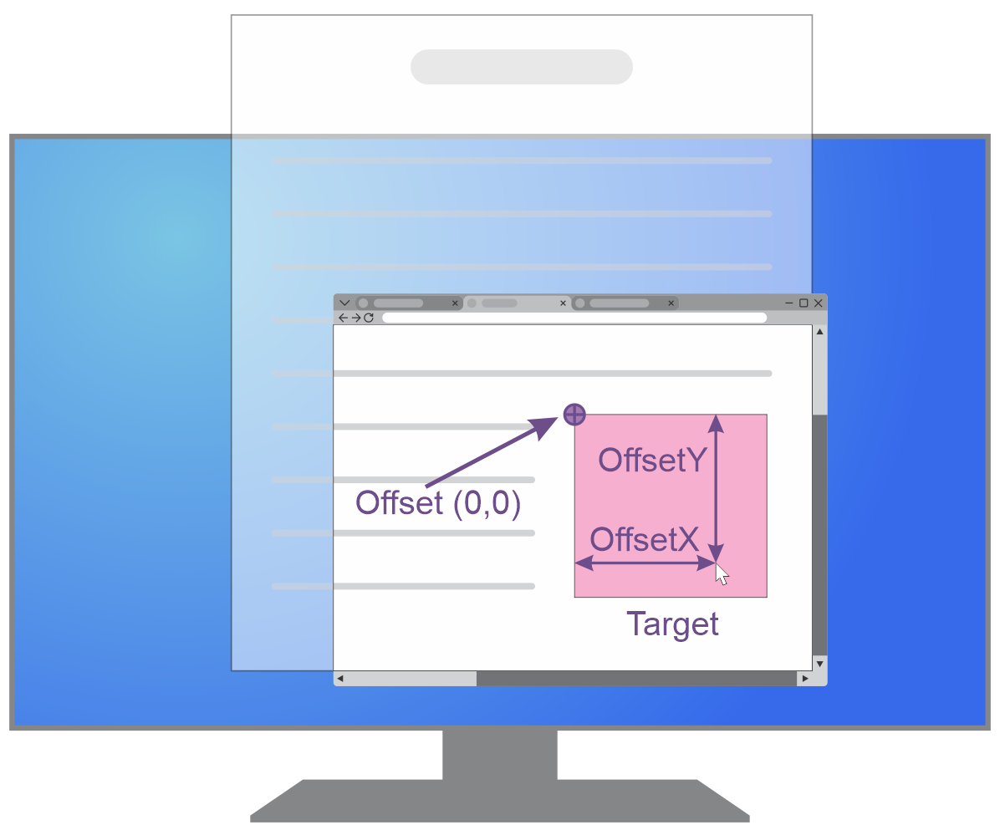
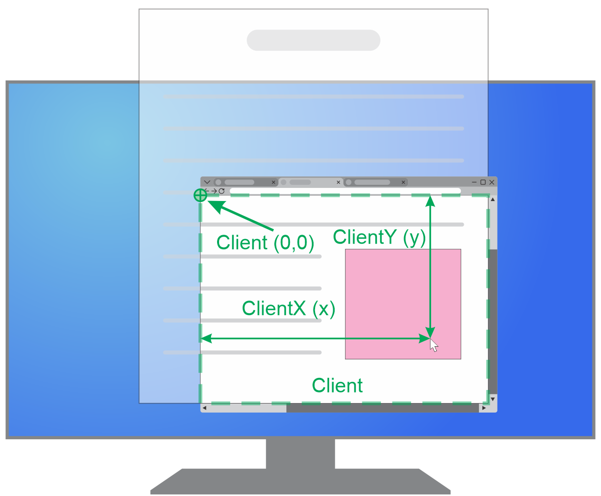
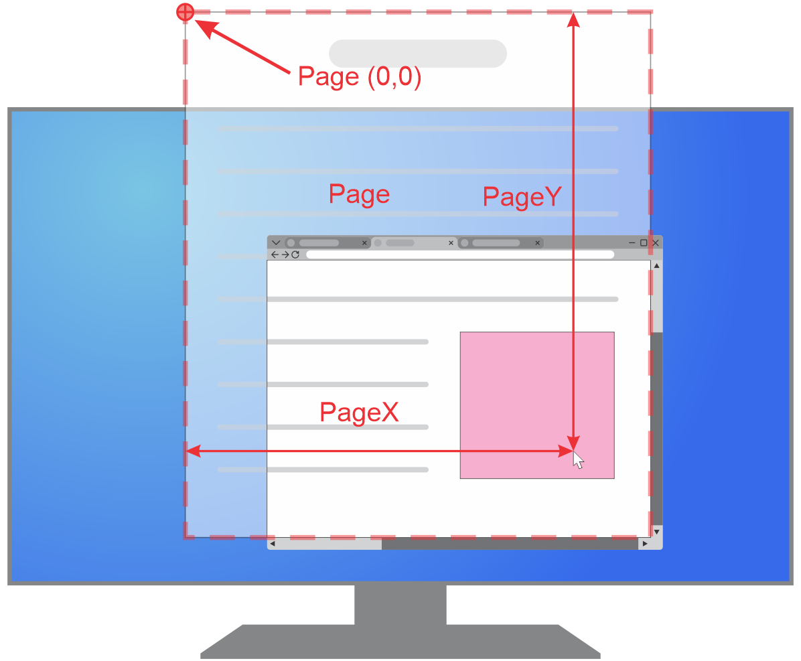
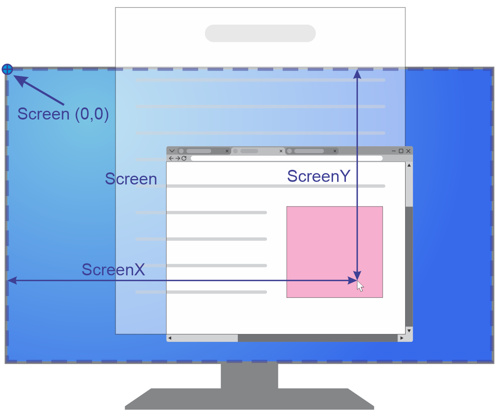

C
D
Hypertext markup language (HTML)
Cascading style sheets (CSS)
JavaScript (JS)
JavaScript là một ngôn ngữ lập trình thường được sử dụng để tạo ra các trang web động và có tính tương tác. JavaScript có thể chạy ở client (browser) hoặc server. Trong phạm vi môn học này chỉ tìm hiểu về các chức năng của JavaScript ở client:
JavaScript là một ngôn ngữ thông dịch, có cú pháp tương tự như C/C++, hỗ trợ hướng đối tượng.
Cách sử dụng JS trong HTML:
Thông dịch


Nhược điểm thông dịch nói chung là tốc độ thực thi chậm do mỗi lần chạy đều phải thực hiện lại quá trình thông dịch từ đầu. Các browser hiện nay thường không chạy JavaScript theo cách thông dịch mà sử dụng các JavaScript engine, một loại JIT (just-in-time compiler), để tối ưu hóa code và tăng tốc độ thực thi.
Các khái niệm cơ bản
Biến
Tên biến (và tên hằng, tên hàm, tên thuộc tính, gọi chung là định danh) có phân biệt hoa thường, chỉ được chứa các ký tự chữ, số, dấu _, dấu $, và không được bắt đầu bằng số.
Khác với C++, biến trong JS không có kiểu cố định, có nghĩa là một biến có thể chứa bất kỳ kiểu dữ liệu nào (dynamic typing).
Cách khai báo và khởi tạo biến/hằng
var <tên biến>; hoặc var <tên biến> = <giá trị>;let <tên biến>; hoặc let <tên biến> = <giá trị>;const <tên hằng> = <giá trị>;So sánh var và let:
Biến khai báo bằng var có phạm vi hàm, biến khai báo bằng let có phạm vi khối,
do đó biến khai báo bằng var có thể được hiểu tại mọi vị trí trong hàm, kể cả trước khi khai báo:
Ngoài ra var còn có thể định nghĩa lại biến:
const cũng có phạm vi khối và không được định nghĩa lại tương tự như let, điểm khác nhau là biến khai báo bằng const không thể gán lại giá trị khác ⇒ "hằng",
tuy nhiên mảng và đối tượng vẫn có thể bị thay đổi nội dung vì const chỉ ngăn không cho thay đổi địa chỉ biến đang trỏ tới chứ không ngăn thay đổi nội dung tại địa chỉ đó:
Lưu ý trường hợp sau:
Nếu gán giá trị vào một định danh chưa được khai báo (thường là do lỗi đánh máy) thì JS sẽ tự động khai báo một biến toàn cục thay vì báo lỗi
Kiểu dữ liệu
Trong JS có các kiểu dữ liệu sau
nullundefinedtrue và falsedouble của C++(IEEE 754). JS không có kiểu số nguyên.Ngoài 2 kiểu cuối cùng, tất cả các kiểu còn lại đều là kiểu cơ sở (primitive data type)
Lưu ý bug sau
Đây là bug từ các phiên bản đầu của JS, nhưng về sau vẫn được giữ lại vì lý do tương thích ngược.
JS là một ngôn ngữ định kiểu yếu (weakly typed), do đó khi các giá trị trong 1 biểu thức có kiểu khác nhau hoặc dùng chung với các toán tử không phù hợp thì JS sẽ thực hiện chuyển đổi kiểu ngầm (type coercion) thay vì báo lỗi
Kiểu Null và Undefined
Cả undefined và null đều được xem như "không có giá trị" hoặc "giá trị không xác định"
Phân biệt: các biến mới được khai báo mà chưa được gán giá trị thì sẽ có giá trị là undefined, còn giá trị null phải được gán vào biến một cách tường minh. Do đó undefined còn có thể được hiểu là "không tồn tại"
Sử dụng trong các biểu thức so sánh
Kiểu Boolean
Kiểu Boolean có 2 giá trị là true và false
Cách dùng với các cấu trúc điều kiện, lặp, các toán tử logic, ... tương tự như trong C/C++
Do JS là ngôn ngữ weakly typed nên cần lưu ý một số giá trị thuộc các kiểu khác cũng có thể xem như tương đương false trong các biểu thức điều kiện (falsy): null, undefined, NaN, 0, ""
Lưu ý phân biệt giữa falsy và chuyển đổi kiểu khi so sánh:
Kiểu Number
Kiểu Number dùng 64 bit để lưu các số thực dấu chấm động ( IEEE 754) và không có kiểu số nguyên. Do đó khi dùng kiểu này để lưu các số nguyên quá lớn sẽ bị mất độ chính xác. Vùng số nguyên có thể lưu chính xác là từ -(253 − 1)(Number.MIN_SAFE_INTEGER) tới 253 − 1 (Number.MAX_SAFE_INTEGER)
Các hàm và hàng số toán học nằm trong đối tượng toàn cục Math (tương tự như thư viện cmath trong C++)
Các hàm chuyển đổi số và chuỗi sẽ học trong phần sau
Lưu ý cách ghi các hệ cơ số
Nhắc lại về độ chính xác của dấu chấm động
Lưu ý các giá trị Infinity và NaN:
Tất cả các phép toán có NaN đều cho kết quả là NaN ngoại trừ 1 trường hợp đặc biệt
Lưu ý khi cần so sánh với NaN:
Kiểu BigInt
Kiểu String
Kiểu String dùng để chứa các chuỗi ký tự UTF-16.
Có thể dùng các cặp dấu "", '', hoặc ``
Các hàm xử lý chuỗi sẽ học trong phần sau.
Cách dùng các dấu đóng mở chuỗi
Do một số ký tự trong bảng mã UTF-16 dùng 2 đơn vị (2 * 16 = 32bit) để lưu trữ nên cần cẩn thận khi tính độ dài, tách chuỗi,... đối với các ký tự này
Toán tử
JS là một ngôn ngữ họ C nên phần lớn các toán tử đã học trong C/C++ đều có trong JS và có tác dụng tương tự (một số trường hợp sẽ có sự khác biệt nhỏ)
Thứ tự ưu tiên tương tự như C++ (đọc thêm)
Lưu ý trong JS toán tử + vừa có chức năng cộng số học vừa có chức năng nối chuỗi. So sánh 2 trường hợp sau:
Toán tử ?? (coalescing) và || (logic OR) có thể dùng để kiểm tra giá trị khác null hoặc undefined nhưng có một điểm khác biệt nhỏ: || sẽ loại bỏ cả các giá trị falsy (false, 0, '', NaN), còn ?? chỉ loại bỏ null và undefined
Mảng
Mảng trong JS là một loại Object đặc biệt
Khác với C++, các phần tử trong mảng có thể có kiểu dữ liệu khác nhau
Do mảng là đối tượng nên có thể dùng thuộc tính length để lấy số lượng phần tử, không cần khai báo thêm biến
VD duyệt mảng:
VD mảng lồng nhau:
Dùng mảng để hoán đổi giá trị 2+ biến
Lưu ý: trong JS các chỉ số mảng có thể không liên tục (sparse arrays) nhưng nên tránh vì code sẽ khó hiểu hơn và dễ xảy ra lỗi
Hàm
Hàm trong JS là một loại Object đặc biệt ⇒ có thể định nghĩa hàm và gán vào 1 biến
Khác với C++, hàm trong JS không có kiểu dữ liệu trả về
Hàm trong JS chỉ có 1 cách truyền tham số là truyền tham trị, KHÔNG có truyền tham chiếu
Hàm trong JS có thể được định nghĩa ở bất kỳ đâu trong chương trình, kể cả bên trong các hàm khác. Một số hàm có thể được định nghĩa và gọi ngay nên cũng không cần có tên hàm (anonymous function)
Khai báo và định nghĩa hàm:
Gán hàm cho biến
Giá trị mặc định
Số lượng tham số bất kỳ (rest parameter)
Lưu ý: 1 hàm chỉ được có 1 tham số ... và phải nằm cuối danh sách tham số
Như đã nói ở trên, JS chỉ có truyền tham trị nên khái niệm truyền tham chiếu trong C++ sẽ không sử dụng được. Tuy nhiên cần phân biệt rõ các trường hợp sau:
Kiểu giá trị
Kiểu tham chiếu
Một hàm có thể truy cập tất cả các biến trong cùng tầm vực mà nó được định nghĩa, kể cả khi đã ra khỏi tầm vực đó
Đây là một tính năng rất tiện lợi của JS, nhưng nếu dùng không cẩn thận hoặc không biết sự tồn tại của tính năng này thì rất dễ dẫn đến memory leak do không giải phóng được bộ nhớ cho những biến đang nằm trong closure.
Cú pháp định nghĩa anonymous function có thể được rút gọn lại thành arrow function:
(<Danh sách tham số>) => {<Thân hàm>}
Nếu <Danh sách tham số> chỉ có 1 tham số duy nhất thì có thể bỏ dấu ()
Nếu <Thân hàm> chỉ có 1 lệnh duy nhất thì có thể bỏ dấu {}, nếu lệnh đó trả về giá trị cho lời gọi hàm thì bỏ luôn từ khóa return, chỉ giữ lại 1 biểu thức/giá trị trả về
Một số hàm thường dùng
Input/Output
Các hàm prompt(), confirm(), alert() sẽ hiện thông báo dưới dạng dialog, dễ gây khó chịu cho người dùng, nên hạn chế dùng các hàm này nếu không thực sự cần thiết (xác nhận đóng cửa sổ, xác nhận xóa dữ liệu, ...).
Các VD trong phần này không tự động chạy, phải bấm bút ⯈ để chạy
Mảng
Phần này chỉ giới thiệu sơ một số hàm thường dùng, SV nên tìm hiểu thêm
Kiểm tra mảng
Array.isArray()
Thêm/bớt phần tử
push(), pop(), shift(), unshift()
SV tự xem VD để suy ra cú pháp và kết quả trả về
splice()
splice(start)
splice(start, deleteCount)
splice(start, deleteCount, item1, item2, /* …, */ itemN)
Lấy mảng con
slice()
slice()
slice(start)
slice(start, end)
Tìm kiếm
indexOf(), lastIndexOf()
SV tự xem VD để suy ra cú pháp và kết quả trả về
includes()
SV tự xem VD để suy ra cú pháp và kết quả trả về
Sắp xếp
sort()
Lưu ý: mặc định nếu không truyền vào hàm so sánh thì hàm sort() sẽ ép kiểu các phần tử thành kiểu chuỗi
Để sắp xếp mảng số thì bắt buộc phải truyền tham số cho hàm sort() là một hàm nhận vào 2 tham số a, b và trả về giá trị âm nếu a đứng trước b, dương nếu a đứng sau b, 0 nếu a bằng b
Có thể viết gọn hơn bằng arrow function
reverse()
Nối thành chuỗi
join()
Chuỗi
Phần này chỉ giới thiệu sơ một số hàm thường dùng, SV nên tìm hiểu thêm
Lấy chuỗi con
slice()
slice()
slice(indexStart)
slice(indexStart, indexEnd)
Giống như slice() của mảng
substring()
substring()
substring(indexStart)
substring(indexStart, indexEnd)
Giống như slice() nhưng tham số âm sẽ được xem như 0, và nếu indexStart lớn hơn indexEnd thì sẽ tự động đổi chỗ (so sánh với VD slice ở trên để thấy sự khác nhau)
Tìm kiếm
indexOf(), lastIndexOf(), includes()
Giống với các hàm của mảng nhưng tham số âm sẽ được xem như 0
match(), matchAll() xem phần Regex
Thay thế
replace(), replaceAll()
Có thể dùng với chuỗi thường hoặc kết hợp với Regex
Xem phần Regex
Chuyển đổi hoa thường
toLowerCase(), toUpperCase()
Bỏ khoảng trắng đầu/cuối
trim(), trimStart(), trimEnd()
Tách chuỗi
split()
split(separator)
split(separator, limit)
separator có thể là chuỗi thường hoặc Regex (xem phần Regex)
Chuyển đổi số và chuỗi
Chuỗi thành số
parseInt(string)
parseInt(string, radix)
parseFloat(string)
Số thành chuỗi
toString()
toString(radix)
toFixed()
toFixed(digits)
toLocaleString()
toLocaleString(locales)
toLocaleString(locales, options)
Tham khảo thêm danh sách các mã ngôn ngữ, danh sách các mã đơn vị tiền
Chuyển đổi ngày giờ và chuỗi
Chuỗi thành ngày giờ
JS hỗ trợ định dạng YYYY-MM-DDTHH:mm:ss.sssZ (ISO 8601)
Một số trình duyệt hỗ trợ các định dạng khác nhưng không thống nhất và không theo quy chuẩn ⇒ không nên dùng
Ngày giờ thành chuỗi
Hẹn thời gian
Hẹn/hủy hẹn một hàm chạy 1 lần sau một khoảng thời gian
setTimeout(functionRef)setTimeout(functionRef, delay)setTimeout(functionRef, delay, param1, param2, /* …, */ paramN)clearTimeout(timeoutID)Hẹn/hủy hẹn một hàm chạy định kì sau một khoảng thời gian
setInterval(functionRef)setInterval(functionRef, delay)setInterval(functionRef, delay, param1, param2, /* …, */ paramN)clearInterval(timeoutID)Lưu ý:
delay là milisecond (ms)timeoutID là kết quả trả về của hàm setTimeout/setInterval cần hủy hẹnCác VD trong phần này không tự động chạy, phải bấm bút ⯈ để chạy
Regular Expression (Regex)
Regex là một công cụ dùng để kiểm tra một chuỗi có thỏa một khuôn mẫu nào nó hay không, hoặc tìm kiếm và thay thế các chuỗi con thỏa khuôn mẫu trong một chuỗi lớn
Tham khảo thêm cú pháp Regex
Cơ bản
Mẫu để kiểm tra/tìm kiếm được đặt trong cặp dấu // (không phải comment)
Sử dụng kết hợp các hàm match(), matchAll(), replace(), replaceAll(). Khi dùng với matchAll() hoặc replaceAll() thì phải thêm đặt cờ global (//g)
Các tập ký tự
Số lượng
Vị trí biên
Ký tự đặc biệt
Tìm trước/sau
Đặt điều kiện cho đứng trước hoặc sau của chuỗi cần tìm
Nhóm
Tạo ra các nhóm để tách nhỏ từng thành phần trong chuỗi cần tìm, có thể dùng khi thay thế chuỗi
Thay thế
Sử dụng trong chuỗi thay thế khi dùng các hàm replace(), replaceAll()
Document Object Model (DOM)
Document Object Model là dạng thể hiện của tài liệu HTML dưới dạng các đối tượng JS
Các đối tượng DOM có cấu trúc cây, mỗi node trên cây là một thành phần trong HTML (thẻ, văn bản, thuộc tính, comment,...)
Những thay đổi trên DOM sẽ được đồng bộ với tài liệu HTML tương ứng, bằng cách này, JS có thể thay đổi nội dung và cấu trúc tài liệu HTML thông qua DOM
window
Đối tượng window là cửa sổ trình duyệt hoặc thẻ <iframe> chứa tài liệu hiện tại.
Thường thì trong một đoạn code đang chạy, từ khóa this và biến window đều trỏ tới cửa sổ hiện tại, và có thể bỏ bớt this/window khi truy xuất các phương thức/thuộc tính của cửa sổ hiện tại
Thường dùng các thuộc tính location và history để chuyển trang
document
Đối tượng document (window.document) là một node đặc biệt (node gốc) chứa nội dung của tài liệu hiện tại dưới dạng cây DOM
document.createElement(tagName): tạo ra một element node mới, xem phần Element
document.head, document.body: các Element node tương ứng với các thẻ <head> và <body>
Node
Các node là các đối tượng DOM tương ứng với các thành phần trong HTML (thẻ, văn bản, thuộc tính, comment,...)
Trong nội dung môn học này chỉ tập trung vào các node tương ứng với thẻ (Element node). Đọc thêm các loại node khác
Element
Attribute và property
Các thuộc tính của thẻ HTML (attribute) sẽ được copy vào các thuộc tính của đối tượng (property) khi đối tượng được vừa được tạo ra.
Trong quá trình người dùng tương tác với trang web, các thuộc tính này sẽ thay đổi giá trị, nhưng chỉ có property thay đổi theo, còn attribute vẫn giữ nguyên giá trị khi vừa load trang
Thử nhập nội dung mới input và click vào checkbox
| Attribute | Property | |
|---|---|---|
| .getAttribute('value') | .value | |
| a | a | |
| .getAttribute('checked') | .checked | |
| a | a |
Tìm element
Một số phương thức để tìm các element
getElementById(id): tìm theo id của thẻgetElementsByClassName(names): tìm các thẻ có đủ những class trong danh sách truyền vàogetElementsByTagName(name): tìm theo loại thẻ ('a', 'p', 'div', ...)querySelector(selectors): tìm theo CSS selector, chỉ trả về 1 element đầu tiên tìm đượcquerySelectorAll(selectors): tìm theo CSS selectorLưu ý:
getElementById và querySelector trả về 1 element (hoặc null nếu không tìm thấy),các phương thức còn lại trả về 1 danh sách (danh sách rỗng nếu không tìm thấy) ⇒ phân biệt Element/ElementsgetElementById và getElementsByClassName nhận vào id/class nên không có các ký tự "#"/".", còn querySelector và querySelectorAll nhận vào 1 CSS selector nên cần các ký tự nàygetElementsByClassName và getElementsByTagName là danh sách live (tự động cập nhật khi có sự thay đổi trong DOM), querySelectorAll không có tính chất nàyid
Cập nhật element
Một số phương thức/thuộc tính để đọc/ghi nội dung các element
id,className,tagName: id, class, loại thẻ của elementclassList: thuộc tính className chứa tất cả class của thẻ dưới dạng chuỗi, rất khó xử lý. Khi cần thêm/bớt/kiểm tra class thì nên dùng class listclassList.add(class1, ..., classN): thêm 1 hoặc nhiều classclassList.remove(class1, ..., classN): bỏ 1 hoặc nhiều classclassList.toggle(class): thêm class nếu chưa có, bỏ class nếu đã cóclassList.contains(class): kiểm tra có class tuyền vào hay khônghasAttribute(attributeName), getAttribute(attributeName), setAttribute(attributeName, value), removeAttribute(attributeName): kiểm tra/đọc/ghi/xóa thuộc tính của thẻ (attribute). Lưu ý: khi ghi hoặc xóa thì sẽ ảnh hưởng tới tài liệu HTML và cả các thuộc tính tương ứng của DOM (property) cũng sẽ bị thay đổi theostyle: đọc/ghi nội dung inline CSS của thẻ. các thuộc tính CSS được ghi theo camelCase. VD: text-align ⇒ style.textAlign, box-shadow ⇒ style.boxShadow, textContent: đọc hoặc ghi nội dung text bên trong thẻ (gồm cả các đoạn text bị ẩn bằng CSS, text trong các thẻ script, thẻ style)innerText: đọc hoặc ghi nội dung text bên trong thẻ (chỉ gồm các đoạn text không bị ẩn)innerHTML: đọc hoặc ghi nội dung HTML bên trong trong thẻ tương ứng (chỉ gồm nội dung bên trong, không bao gồm phần mở/đóng thẻ)outerHTML: đọc hoặc ghi nội dung HTML của thẻ tương ứng (bao gồm cả phần mở/đóng thẻ), tương đương với việc thay thế thẻremove(): xóa node hiện tạireplaceWith(param1, param2, /* …, */ paramN): thay thế element hiện tại bằng 1 hoặc nhiều node mới (element hoặc text), xem phần document.createElement()Quan hệ giữa các element
Element con
children: danh sách các element con của element hiện tại (lưu ý phân biệt với childNodes)childElementCount: số lượng các element con của element hiện tạifirstElementChild, lastElementChild: element con đầu tiên/cuối cùng của element hiện tạiappend(),prepend(): nhận vào 1 hoặc nhiều node (cả element và các loại node khác) và thêm vào cuối/đầu element hiện tại, xem phần document.createElement()Element cha
parentElement: lấy element cha (null nếu element hiện tại không có element cha)closest(selectors): lấy element gần nhất chứa element hiện tại và thỏa 1 CSS selector (null nếu element hiện tại không có element cha hoặc không không có element nào thỏa selector). Lưu ý: nếu element hiện tại thỏa selector thì cũng được lấyCác element cùng cha
nextElementSibling: lấy element nằm liền sau (null nếu element hiện tại nằm cuối cùng)previousElementSibling: lấy element nằm liền trước (null nếu element hiện tại nằm đầu tiên)before(),after(): nhận vào 1 hoặc nhiều node (cả element và các loại node khác) và thêm vào trước/sau element hiện tại, xem phần document.createElement()Sự kiện (Event)
Sự kiện là cách để JS nhận biết các thay đổi trên trang web (di chuyển chuột, click chuột, nhập dữ liệu form, ... ) và gọi các đoạn code để xử lý các thay đổi này
Có 3 cách để gắn đoạn code xử lý cho một sự kiện:
Khi cần gỡ bỏ hàm xử lý ra khỏi 1 sự kiện:
addEventListener() dùng anonymous function thì không thể gỡ bỏ bằng cách này mà phải dùng AbortSignal.Tham số event
Các đoạn code xử lý/hàm xử lý sẽ được truyền 1 tham số Event cho biết các thông tin về sự kiện và có thể hủy một số sự kiện
Nếu dùng cách đưa đoạn code vào thuộc tính thẻ HTML thì tên tham số là event, còn 2 cách dùng hàm trong JS thì có thể đặt tên tham số tùy ý
Tùy loại sự kiện mà tham số sẽ có các thuộc tính khác nhau nhưng luôn có các thuộc tính sau:
Di chuyển chuột vào ô vuông hoặc nhập vào textbox
Hủy sự kiện
Khi cần hủy các tác dụng mặc dịnh của một sự kiện (chuyển trang khi click thẻ <a>, chọn checkbox khi click, hiện chữ trong thẻ <input>, submit form,...):
return false: hủy tác dụng của sự kiện khi dùng trong đoạn code gán trực tiếp vào thẻ HTML. Khi dùng trong hàm xử lý của JS thì chỉ có tác dụng thoát khỏi hàm.event.preventDefault(): hủy tác dụng của sự kiện Lưu ý: chỉ các sự kiện có Event.cancelable là true thì mới hủy được
Bubbling
Một số sự kiện có tính chất bubbling, có nghĩa là khi sự kiện này xảy ra trên một đối tượng thì nó cũng xảy ra trên tất cả các đối tượng chứa đối tượng đó
Trong tham số event có thuộc tính target chứa đối tượng mà sự kiện bắt đầu xảy ra và thuộc tính currentTarget chứa đối tượng đang gọi hàm xử lý
Hàm event.stopPropagation() sẽ ngăn sự kiện tiếp tục lan truyền lên cho các đối tượng khác
D
Một số sự kiện thường dùng
Load trang
document và chỉ gán được bằng addEventListener()Sự kiện chuột
Các thuộc tính liên quan:





Sự kiện phím
keydown, keypress, keyup:
Các thuộc tính liên quan:
Sự kiện focus
Chỉ các thẻ nào cho phép người dùng nhập dữ liệu hoặc tương tác bằng bàn phím mới có thể nhận focus và có các sự kiện focus:
<input>, <select>, <textarea>, <button> nếu như không bị disabled (bằng thuộc tính HTML hay code JS)<a>, <area> nếu như có thuộc tính hrefcontentEditable = truetabindex hợp lệ. Nếu tabindex là -1 thì không thể focus bằng phím tab nhưng vẫn có thể focus bằng click chuộtCác sự kiện:
Tham khảo thuộc tính relatedTarget
Click vào đoạn text này, sau đó nhấn tab để chuyển focus cho các thẻ khác
Tab index
Content editable
ASự kiện nhập liệu
<input>, <select>, <textarea> bị thay đổi do thao tác của người dùng (không xảy ra nếu thay đổi bằng code JS). Lưu ý: đối với <input type="radio">, sự kiện KHÔNG xảy ra khi bỏ chọn<textarea> và các loại <input> dạng text (text, password, number, email, ...) chỉ xảy ra khi thẻ mất focusNhập 2+ ký tự bất kỳ vào textbox sau rồi click ra ngoài
Thay đổi tùy chọn trong select (bằng chuột hoặc phím)
Check/uncheck các checkbox và radio sau
Ứng dụng:
Sự kiện submit form
Xảy ra trước khi thẻ <form> gửi dữ liệu về server, thường dùng để kiểm tra dữ liệu người dùng nhập có đúng quy định chưa.
Cách này có ưu điểm hơn so với các thuộc tính kiểm tra trong thẻ HTML là có thể tùy chỉnh nội dung, cách hiển thị và định dạng của câu thông báo thay vì dùng câu thông báo mặc định của trình duyệt, và một số trường hợp các quy định phức tạp không thể giải quyết bằng các thuộc tính HTML.
Cho dù dùng HTML hay JS để kiểm tra dữ liệu người dùng nhập ở client thì cũng phải kiểm lại ở server, vì người dùng có thể chỉnh sửa HTML/JS để vô hiệu hóa bước kiểm tra ở client.